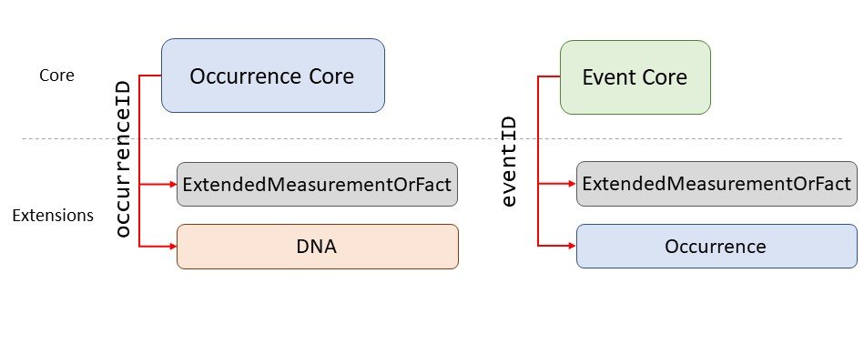

3 Dataset structure
Formatting data can be challenging. This section of the manual deals with how to format data for OBIS, beginning with an overview of dataset structure.
Deciding on your dataset structure is one of the first steps towards getting your data ready for publishing. At this step, there are different non arbitrary you need to do with your data, but it is important to determine which structure best suits your dataset before proceeding. Then, once you have decided on the dataset structure, you can continue formatting your data.
We have created the following flow chart for an overview on how to determine what structure best suits your data.
For more guidance, see the sections below.
3.1 When to use Event Core
Event Core describes when and where a specific sampling event happened and contains information such as location and date. Event Core is often used to organize your data tables when there are more than one sampling occasion and/or location, and different occurrences linked to each sampling. This organization follows the rationale of most ecological studies and typical marine sampling design. It covers:
- When specific details are known about how a biological sample was taken and processed. These details can then be defined in the eMoF Extension with the Q01 vocabulary
- When the dataset contains abiotic measurements, or other biological measurements which are related to an entire sample (not a single specimen). For example a biomass measurement for an entire sample, not each species within the sample
Event Core can be used in combination with the Occurrence and eMoF extensions. The identifier that links Event Core to the extension is the eventID. parentID can also be used to give information on hierarchical sampling. occurrenceID can also be used in datasets with Event Core in order to link information between the Occurrence extension and the eMoF extension.
3.2 When to use Occurrence Core
Occurrence Core datasets describe observations and specimen records and cover instances when:
- No information on how the data was sampled or how samples were processed is available
- No abiotic measurements are taken or provided
- You have eDNA and DNA-derived data
- Biological measurements are made on individual specimens (each specimen is a single occurrence record)
Occurrence Core is also often the preferred structure for museum collections, citations of occurrences from literature, and sampling activities.
Datasets formatted in Occurrence Core can use the eMoF Extension for when you have biotic measurements or facts about your specimen. The DNA derived data extension can also be used to link to DNA sequences. The identifier that links Occurrence Core to the extension(s) is the occurrenceID.
3.3 Extensions in OBIS
Currently OBIS accepts the following extensions:
- Occurrence
- Event
- MeasurementOrFact
- extendedMeasurementOrFact
- DNADerivedData
3.3.1 How are extensions linked to core tables in OBIS?
As established in the relational database section, OBIS relies on datasets being formatted according to a relational database structure. The ENV-DATA approach that OBIS implements means your dataset will have a Core table and (optionally) Extension tables. As a review, a core file contains information relevant and applicable to each record in the extension(s). An extension file then contains records that link back to a record in the core file with more specific information (e.g., methods, measurements, facts, DNA sequences, etc.).
The extension file(s) accepted by OBIS (eMoF, Occurrence, DNA) are linked to your core tables by the use of identifying ID codes. These codes could be either eventID or occurrenceID. For details on how to construct these IDs, click here.
3.3.2 Differences between identifiers
If your core file is based on occurrences (e.g., a record of one or more taxa specimens), then any extensions are linked with occurrenceID. If your core file is based on events (e.g., a sampling event, cruise, observation, etc.), then the linking identifier is eventID. In the Core tables, identifiers are always unique, which means, they do not repeat and each line has a different identifier. On the other hand, multiple records in an extension file can have the same identifier which will link them to the same event or occurrence record (depending on which is the Core). The different linking identifiers are shown in the figure below.

Let us consider a fictional plankton trawl sampling event to demonstrate how identifiers link Core and Extension tables in OBIS. This trawl used two types of nets, occurred in March 2013, and has an eventID plankton-northsea-2013-03. Suppose we have information about the types of trawl used and the species abundance from this trawling event. The information (e.g., date) of the sampling event itself would be found in the Event Core, whereas the abundance data and sampling methods would be in the eMoF table. How do we ensure the abundance and sampling method data is properly linked to the correct event? By using the same eventID for each record in the eMoF table, plankton-northsea-2013-03, the information is properly linked between the Event Core and the eMoF extension.
3.4 Data formatting tools
The GBIF Norwegian Node created the DwC Excel Template Generator. This tool will generate four different types of blank Excel spreadsheets: Occurrence Core, MeasurementOrFact, Metadata, and a README. This tool works best if you already know which Darwin Core fields you need, although a default template can be generated.
Another tool from Norway is the Excel to Darwin Core Standard (DwC) Tool. This is a macro Excel spreadsheet that helps create templates for Event (aka Sampling-Event) and Occurrence core tables, as well as MeasurementsOrFacts, Extended MeasurementsOrFacts, and Simple Multimedia extensions. GBIF provides an Occurrence core template and an Event core template. If you use these templates from GBIF, be aware that GBIF’s required terms are different from OBIS.
There are also some tools that can help you unpivot (or flatten) data tables. These can be used to flatten many columns into one, particularly useful for the eMoF table.
- GBIF Norway’s crosstab to list converter. Note that this tool is not completely automated
- Excel’s built-in unpivot function